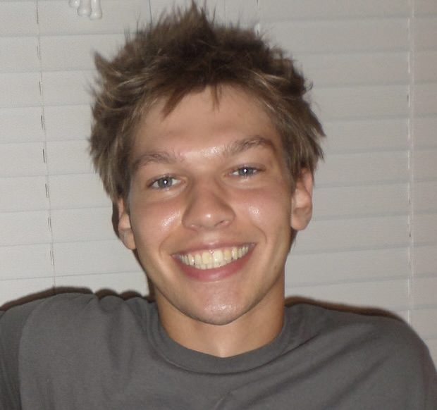

Jefrey Bergl
I am an undergraduate student at the University of North Carolina at Chapel Hill, where I study Computer Science and Applied Math.
I am broadly interested in time series analysis, multimodal reasoning, simulation, and interpretability. I'm currently working with adversarial attacks on time series forecasting models.
I also enjoy playing guitar, tennis, rock climbing, and cooking.
News
- Oct 2025: Released a preprint! arXiv: The Black Tuesday Attack: how to crash the stock market with adversarial attacks to financial forecasting models
- May 2025: Completed project analyzing Vision Transformer performance in real world use cases [poster]
- April 2025: Selected as a spotlight speaker at AI@UNC I/O for my work on adversarial attacks on financial forecasting models [slides]
- Dec 2024: Completed a project building a lightweight CNN for brain tumor detection in MRIs [Github]
- Oct 2024: Beginning work on adversarial attacks on financial forecasting models with Prof. Thomas Hofweber
Publications + Preprints
- Oct 2025: Thomas Hofweber, Jefrey Bergl, Ian Reyes, Amir Sadovnik. The Black Tuesday Attack: How to Crash the Stock Market With Adversarial Attacks to Financial Forecasting Models. Submitted to The Journal of Cybersecurity, 2025. arXiv: arxiv.org/abs/2510.18990
Projects
-
May 2025: Evaluating Vision Transformer Behavior in Real-World Settings | Technologies: Python, PyTorch, HuggingFace Transformers, OpenAI CLIP, BLIP, TimeSformerInvestigated real-world performance of five Vision Transformer models across 30 diverse images and videos. Built an evaluation pipeline for classification, captioning, and VQA outputs, and identified characteristic failure patterns including CLIP’s rare-class sensitivity, TimeSformer’s occlusion issues, BLIP’s generic caption drift, ViLT’s perspective illusions, and ViT age-misprediction under makeup/domain shift. [ poster ]Dec 2024: Cost-Effective Brain Tumor Detection with CNNs | Technologies: Python, TensorFlow/Keras, scikit-learn, NumPy, Pandas, MatplotlibBuilt a low-parameter CNN to classify grayscale brain MRI scans with an emphasis on minimizing false negatives. Implemented a 3-block CNN with augmentation and hyperparameter tuning. Achieved Accuracy ≈ 0.85 and F1 ≈ 0.87, compared to VGG-16 (0.93/0.93) and ResNet-50 (0.86/0.87), reducing false negatives while remaining significantly smaller and cheaper to deploy. [ GitHub ]
Presentations
- April 2025: AI@UNC — “Adversarial Attacks on Financial Forecasting Models” [slides]